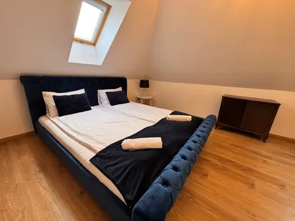

#110Huzd a kepet a sorrend modositasahozdandelion-zsalya-source-001.webpzsalya-001
betöltés…ismeretlen
SEO draft
approved: false
altHu: Zsalya Vendegház hálószobája franciaággyal és tetőtéri ablakkal
titleHu: Zsalya Vendegház hálószoba
captionHu: A hálószobában egy franciaágy, egy kis asztal és egy tetőtéri ablak van.
altEn: Zsalya Vendeghaz bedroom with a double bed and a skylight window
titleEn: Zsalya Vendeghaz bedroom
captionEn: The bedroom has a double bed, a small table, and a skylight window.